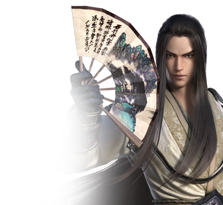

八荒门派 各有主张

太白
流星白羽光出匣，一剑无痕雪漫山
风无痕本是开封府司录司参军事，负责协助捕门之人，利用强大的分析能力来推理查案。在多年的查案之中，风无痕因偶然机会获取本被认为是医书的《破穴论》...


神威
神威倒卷翻空浪，一举冲霄气势雄
后周副都指挥使韩通于954年创立“神威营”，忠诚守护后周皇室安全。韩通之子韩微，曾几次劝说父亲除去后周重臣赵匡胤，但韩通却欣赏赵匡胤之人才气度...


唐门
雾霭云从飞星落，半影相依扇中情
蜀中唐氏，自魏晋起便为世家。五代十国之时，唐门少主唐郢化名卢郢，游历江南，更是进士及第，成为南唐的文武双进士，天下闻名...

五毒
动游碧落心无碍，静藏深渊迹绝踪
地处云滇的五毒与中原诸派均有所不同，其武学以狠、诡、毒、快为要诀，以诡秘凌厉的刀法配合神鬼莫测的身法，可谓是举手之间、取人性命；轻烟散尽、乃见五毒


天香
竞夸天下双无绝，独立人间第一香
华佗当年被处死之前，将其一生所学著为《青囊书》一卷。数百年后，少年桑柴子偶得此书，修习医术，其第一个救下之人，便是官宦千金员外之女...


真武
灵妙潜通乘风起，太极玄虚若镜清
真武祖师张梦白本是书香门第出身，屡试不中时竟在襄州山中偶遇一似癫似疯之道人扶摇子。得其点化，张梦白以文入武，更习得驱影之术...


丐帮
醉来豪气不可收，嘘作长虹贯牛斗
丐帮最早的源流可追溯到春秋时期，但正式作为一个门派存在于江湖之中，则是从唐末开始。黄巢起义中，某金姓将领因不满义军暴虐残害百姓...


神刀
刀含杀气腾幽朔，萧飒寒芒泣鬼神
长刀掠世，雄鹰相随，勇者初心无惧，仁者自可无敌。神刀乃傅红雪叶开所在之门派，江湖中第一用刀之门派，亦是八荒中最为特立独行、潇洒率性之门派...